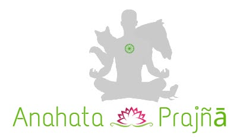

Bientôt
Quelque chose se prépare, doucement.
En attendant, inspirez … expirez.
Le site ouvre bientôt ses portes.

Quelque chose se prépare, doucement.
En attendant, inspirez … expirez.
Le site ouvre bientôt ses portes.